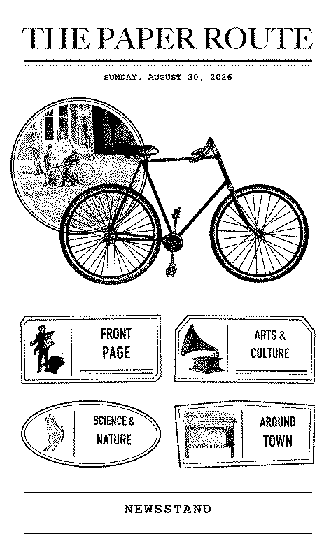

The Traveler’s Companion
I built custom firmware for a reTerminal Sticky that lives inside my everyday planner. Its newspaper-themed interface, Paper Route, holds articles, appointments, pocket references, and a changing collection of art and ephemera.
A small server at home gathers articles, calendar events, and local details such as tides and wildlife sightings into new editions. Once an edition arrives over Wi-Fi, I can read it anywhere.


View the Paper Route screenSend me a postcard!
Pick a picture you think I’d like, write me a note, and choose a stamp. When I get home, I’ll have mail waiting in my planner.